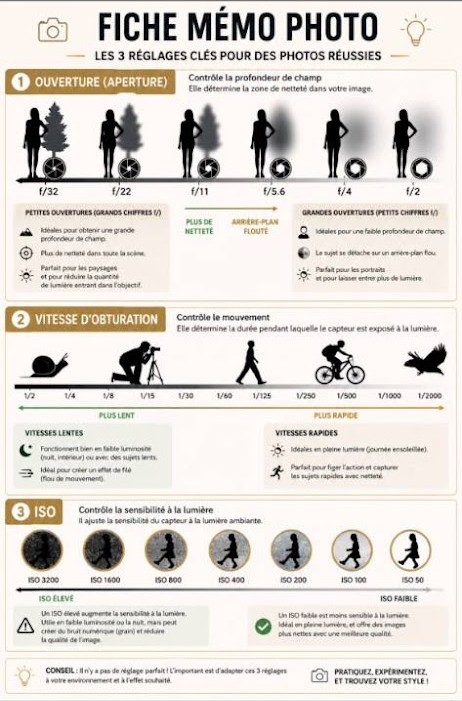

Trois voies, cinq niveaux chacune, des exercices à faire sur tes propres photos et des quiz pour valider. Ta progression est sauvegardée dans ce navigateur.
Tes RAW sont dans G:\STOKAGE IMAGES\Photo Saysko et ton catalogue dans catalogue Lightroom\Lightroom Catalog-4.lrcat.
Parcours détaillé : ouvrir le parcours Capture One interactif.
Passe du JPG exporté à la retouche fine : détourage, masques, fréquences et finitions.
Ouverture, vitesse d'obturation, ISO : l'essentiel à garder sous les yeux quand tu règles ton boîtier. Imprime-la ou télécharge-la.
